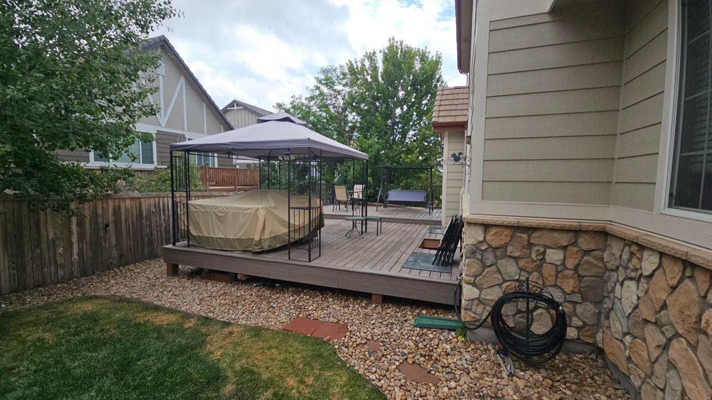
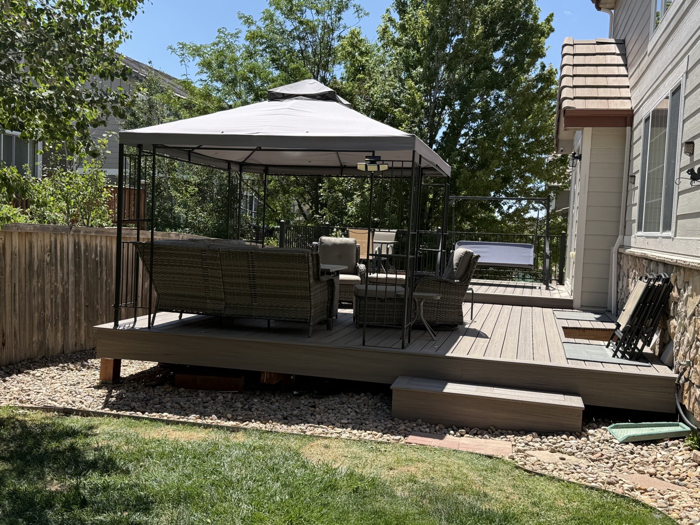
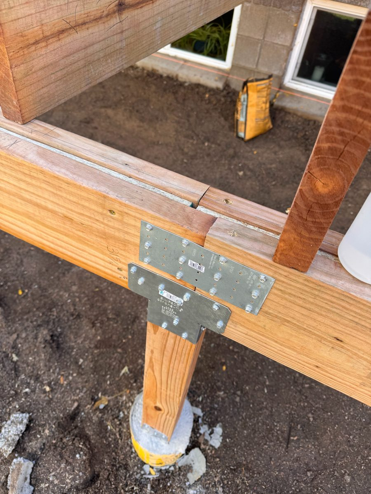
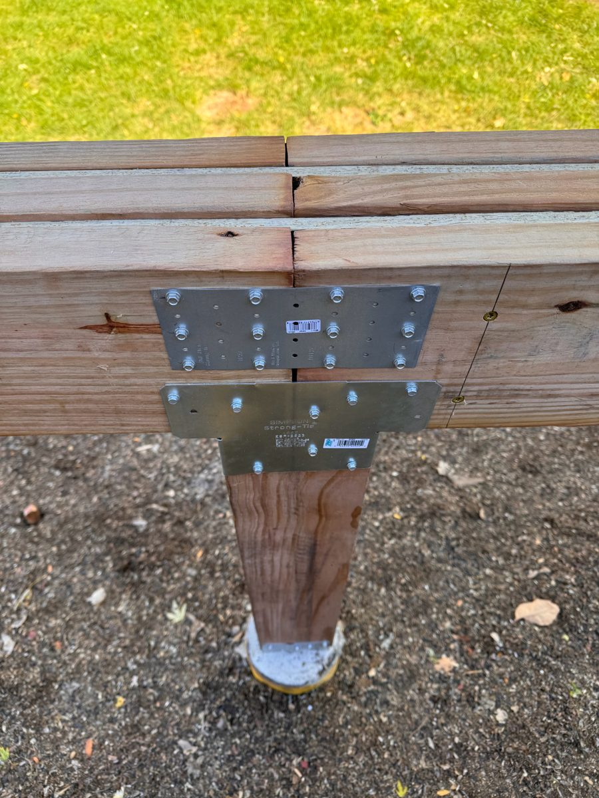
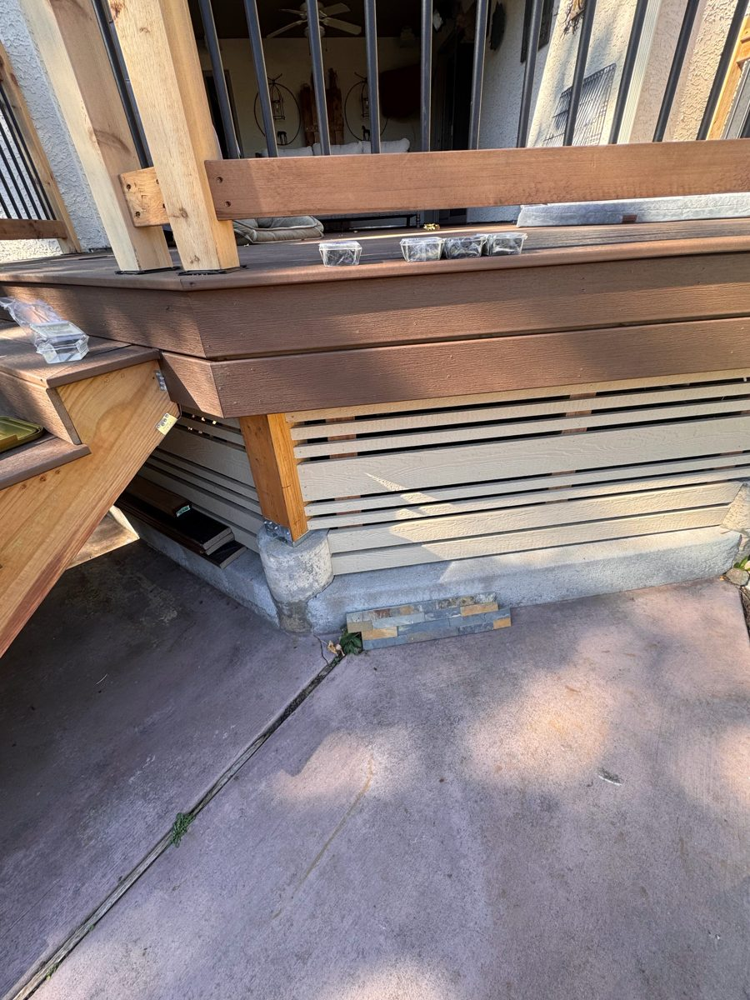
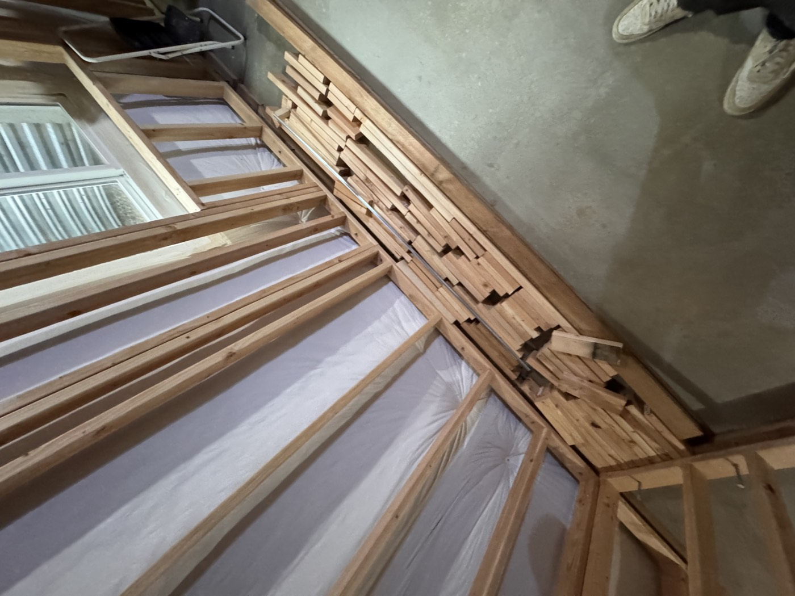
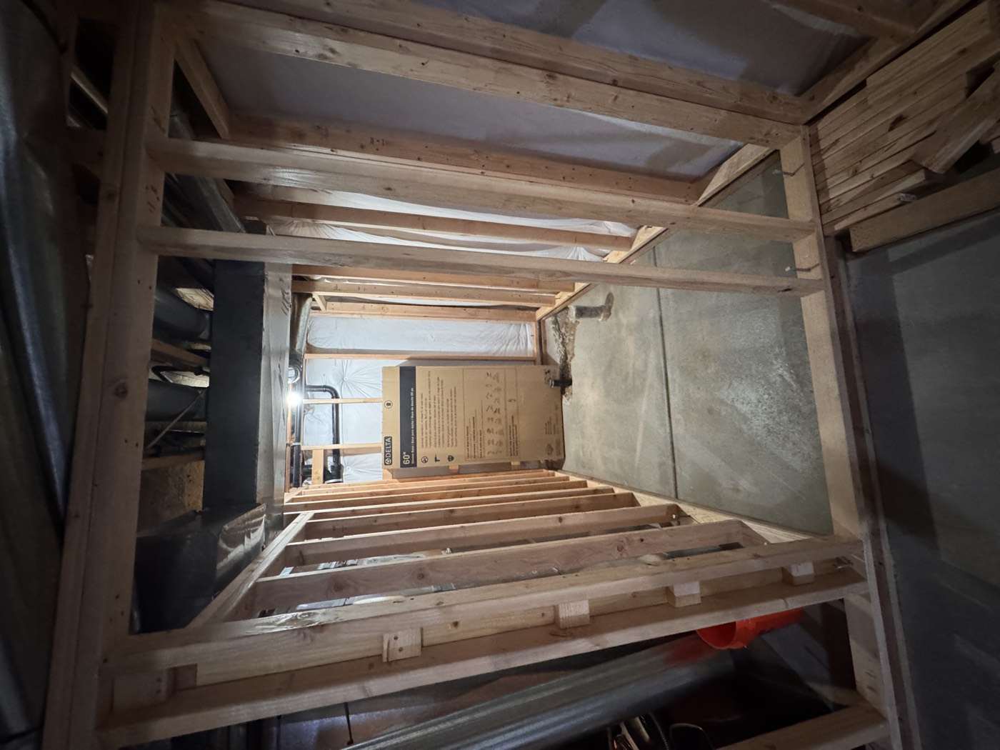
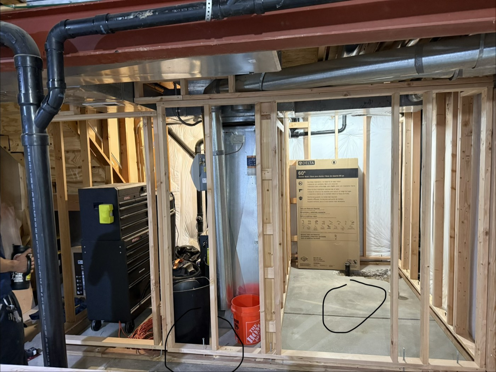

An elevated backyard deck taken all the way through: set the footings and posts, framed the substructure, laid the composite decking, and finished with black aluminum railing and stairs.

Finished deck — composite boards, black aluminum railing, and stairs.

Level boards, clean lines, and steps down to grade.

Beam splice centered over the post, tied with Simpson Strong-Tie plates.

Post-to-beam connection: multi-ply beam, through-bolted hardware, post on a concrete pier.

Finish details: fascia, horizontal slat skirting, and stairs tied in.
Basement build-out — framing & bathroom rough-in
Interior framing for a full basement finish, including partition walls and a bathroom rough-in framed for a 60" shower — working cleanly around existing ducting, plumbing, and a steel beam.

Interior wall framing, with trim stock staged.

Bathroom rough-in — framed for a 60" shower.

Framing around the mechanicals and utilities.
What I bring to a crew
Deck framing & composite deckingFootings & postsAluminum railing & stairsInterior wall framingBathroom rough-inShiplap & sidingMeasuring & layoutPower & hand toolsShows up every day
Short video walkthroughs of these projects are available on request.